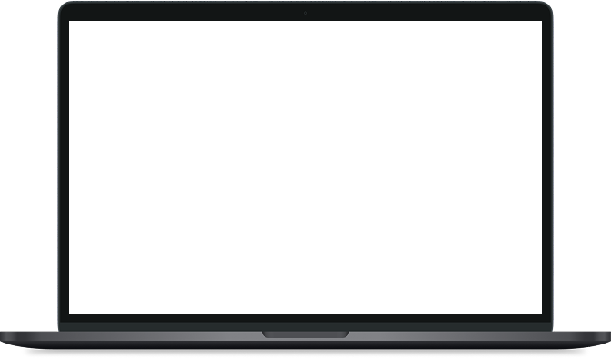

Видео-контент
Самостоятельный тип контента бренда «УниВенд», который объединяет визуальный ряд, фирменные текстовые плашки, анимированный логотип‑водяной знак, звуки и авторскую музыку. Он используется для захвата внимания в ленте, объяснения формата сервиса и демонстрации продукта в реальной среде — от коротких вертикальных роликов до развёрнутых горизонтальных видео для RuTube
Использование
Вертикальные 9:16 ролики, клипы, мемы, ASMR, анонсы горизонтальных видео
Короткие вертикальные видео для постов, анонсов, быстрых объяснений и вовлекающих рубрик

Горизонтальные 16:9 ролики: обзоры, инструкции, длинные истории и полное раскрытие сценария
Вертикальные shorts-ролики для быстрого захвата внимания и перехода к полному видео
Форматы видео
Структура
Во всех роликах используется единая визуально-смысловая структура
В начале ролика и на протяжении всего хронометража в кадре присутствует текстовая плашка с коротким маркером формата.
В правом нижнем углу каждого ролика расположен анимированный логотип UniVend, используемый как постоянный водяной знак.
Во всех роликах, где присутствует речь (в кадре или закадровый голос), используются субтитры. Они дублируют ключевые реплики, делают контент понятным при просмотре без звука и поддерживают фирменную типографику: шрифт Gros Ventre, читаемый размер, контрастный цвет относительно фона. Субтитры и текст на плашке работают вместе: плашка задаёт общий контекст, а субтитры передают конкретные фразы и пояснения
Во всех роликах, где присутствует речь (в кадре или закадровый голос), используются субтитры. Они дублируют ключевые реплики.